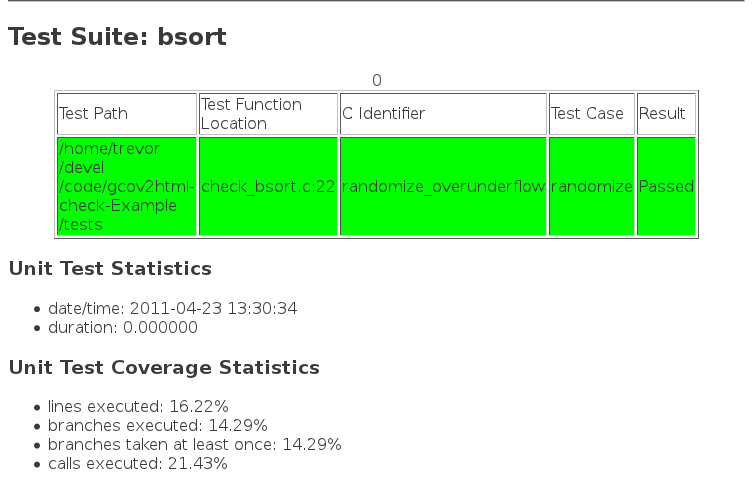
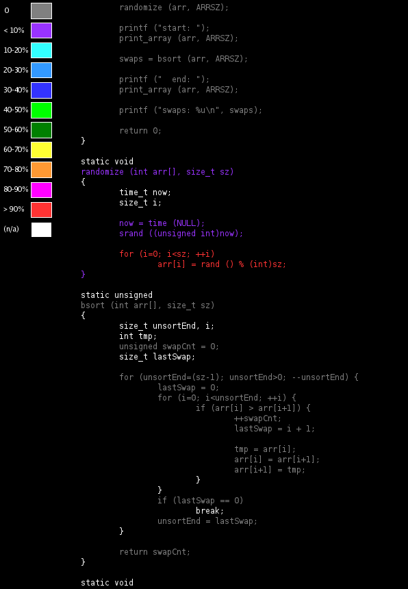

6.4. Test Report
Check also comes with another nifty feature in that it can generate a report in XML. Using an XSLT stylesheet I can convert the XML into HTML as part of the build:
## Copyright (C) 2011 Trevor Woerner ######################## ## tests/Makefile.am 5 ######################## SUBDIRS = AM_MAKEFLAGS = -k AM_CFLAGS = -Wall -Werror -Wextra -Wconversion -Wreturn-type -Wstrict-prototypes \ -fprofile-arcs -ftest-coverage @CHECK_CFLAGS@ -I$(top_srcdir)/lib 10 LDADD = @CHECK_LIBS@ if COND_HAVE_CHECK TESTS = check_bsort noinst_PROGRAMS = check_bsort 15 check_bsort_SOURCES = check_bsort.c $(top_srcdir)/src/bsort.c check_bsort_CFLAGS = -DUNDER_TEST $(AM_CFLAGS) -I$(top_srcdir)/src check-local: if test x$(HTML_CHECK_RESULT) = xtrue; then \ 20 $(gcov2html_check_BINDIR)/getgcov.sh check_bsort-bsort.c CheckLog_bsort.xml; \ $(XSLTPROC) $(gcov2html_check_PKGDATADIR)/CheckLog.xsl CheckLog*xml > CheckLog.html; \ if test x$(GCOV2HTML) != xfalse; then \ $(GCOV2HTML) bsort.c.gcov; \ $(INSTALL) $(gcov2html_check_PKGDATADIR)/gcov2html-check.png .; \ 25 fi \ fi endif 30 clean-local:: $(RM) *png *html CheckLog*txt CheckLog*xml *.gc* |
Now you'll end up with a CheckLog.html which summarizes the tests that were run

and a bsort.c.html that shows how well your tests covered your source code.
 | Make sure to have a look at the gcov2html-check-Example project for the complete code and build configuration. |